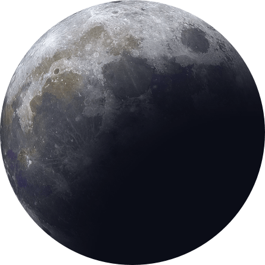

Moon
See our planet as you've never seen it before. A perfect relaxing trip away to help regain perspective and come back refreshed. While you're there, take in some history by visiting the Luna 2 and Apollo 11 landing sites.

See our planet as you've never seen it before. A perfect relaxing trip away to help regain perspective and come back refreshed. While you're there, take in some history by visiting the Luna 2 and Apollo 11 landing sites.